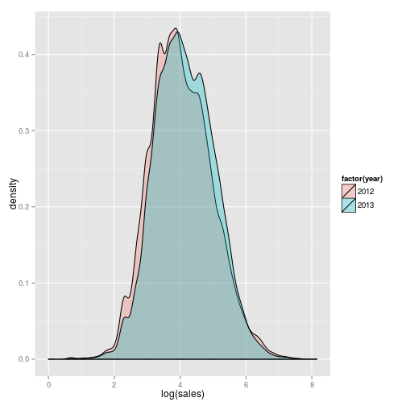
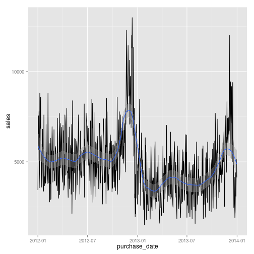
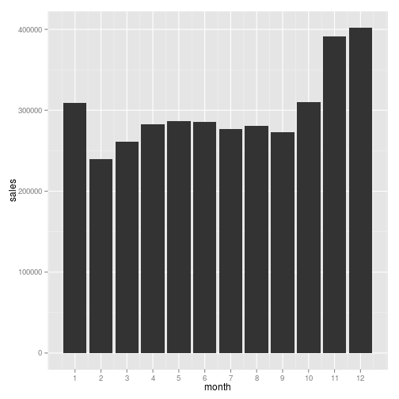
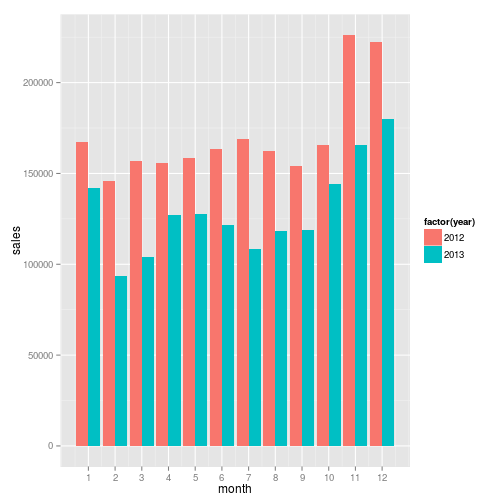

Visualization in R
Base-R graphs
library(dplyr)
height_weight <- read.csv("/home/divenyijanos/Dropbox/teaching/Programming_Tools/Fall2015/Data/height_weight.csv")
height_weight <- filter(height_weight, 100 < height, height < 250)
plot(height_weight)
plot(height_weight$height, height_weight$weight)

Package ggplot2
ggplot2 is a package developed by Hadley Wickham (so part of the “hadleyverse”).
It is powerful visualization tool for R which is built upon the logic of
grammar of graphics.
Most of the basic plots could be created by the “quick-plot” command qplot().
# install.packages("ggplot2")
library(ggplot2)
qplot(height, weight, data = height_weight)
qplot(height, data = height_weight)
Quick-plot could be customized easily.
qplot(height, weight, data = height_weight, color = "darkred", size = 3)

qplot(height, weight, data = height_weight, color = "darkred", size = 3, facets = ~ male)
For complicated graphics, it is better to use the standard ggplot() formulation,
which makes the underlying logic more explicit. What is behind a plot? We map
different collections of data to different characteristics of a plot and use
different visual elements to show them. In the graph above, we map the data
about heigths to the x axis of the plot, the weights to the y axis (aesthetics),
and use points to make them appear (geometries).
g <- ggplot(data = height_weight, aes(x = height, y = weight)) + geom_point()
g

We can customize the geometries by setting the options.
g <- ggplot(data = height_weight, aes(x = height, y = weight)) +
geom_point(size = 3, color = "darkred")
g
We can modify the general properties of the graph.
g + xlab("Height (cm)") + ylab("Weight (kg)") + ggtitle("Height vs weight")
This formulation is great as it is really flexible. What if we would like to use different colors for males and females. This essentially requires the mapping of the male variable to the color of the points.
ggplot(data = height_weight, aes(x = height, y = weight, color = male)) +
geom_point(size = 3)
Here, factors help a lot. They show that our variable is categorical and could take only two values.
ggplot(data = height_weight, aes(x = height, y = weight, color = factor(male))) +
geom_point(size = 3)

What if we would like to add a fitted line to the points? We could just add a new layer to the plot.
g + geom_smooth()

g + geom_smooth(method = "lm")
By carefully controlling the aesthetics of different geometries, we can fit the line either to each points or separately by gender.
ggplot(data = height_weight, aes(x = height, y = weight, color = factor(male))) +
geom_point(size = 3) +
geom_smooth(method = "lm")

ggplot(data = height_weight, aes(x = height, y = weight)) +
geom_point(aes(color = factor(male)), size = 3) +
geom_smooth(method = "lm")
Here is a
really good tutorial of the ggplot2 package and the grammar of graphics.
It is also worth looking at the documentation
which summarises all of the available options with lots of examples.